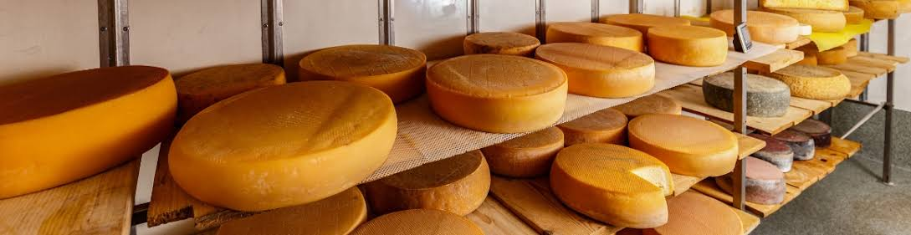

Explore the Trail Stops
Compare these destinations to build your sample Wisconsin food and beverage itinerary.
Brewery and Creamery Guide
| Stop Name | Type — Brewery/Creamery | City | Signature Item |
|---|---|---|---|
| Lakefront Lantern Brewing | Brewery | Milwaukee | Amber lager |
| Prairie Wheel Creamery | Creamery | Madison | Aged cheddar |
| Fox Trail Brewing | Brewery | Appleton | Seasonal pale ale |
| Cedar Valley Cheese House | Creamery | Sheboygan | Fresh cheese curds |
| Northwoods Lantern Brewing | Brewery | Eau Claire | Roasted malt porter |
| Driftless Meadow Creamery | Creamery | La Crosse | Herb cheese spread |
Discover Artisan Cheese

A creamery stop can introduce you to fresh curds, aged cheddar, and other specialty cheeses.
Questions to Ask Before Visiting
- What are the current opening hours?
- Are tours or tastings available?
- Do tours require advance reservations?
- Are accessible entrances and restrooms available?
- Are food and nonalcoholic beverages offered?